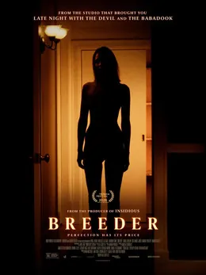

The genetics
Breeder is a horror film about private eugenics. Patti Kolb, a dog breeder, applies selective breeding to people: she adopts girls for their perceived superior traits, researches the men she lures as 'studs', imprisons them and forces her 'daughters' to bear children, whom she sells on the black market. Her methods are coercive and murderous, combining enforced mating, sperm collection and confinement. The film frames her as a villain obsessed with genetic superiority, and the hero's own protest, that his anxiety disorder disproves her choice of him, shows how arbitrary her idea of good stock is. The ending is bitter: Russell survives but takes her money for his research and keeps the truth from his partner, so the scheme's fruits are hidden rather than undone. No genetic technology is involved, only breeding; the film echoes the old eugenic analogy between livestock breeding and human improvement.
How genetics is portrayed
- Overall portrayal of genetics
- negative Eugenic breeding is shown as a criminal, dehumanizing obsession, and the morally compromised ending makes the hero complicit rather than redeeming the scheme.
- Outcome of the genetic intervention
- negative The breeding programme involves imprisonment, forced reproduction, child trafficking and several deaths, including Ainsley's.
- Patti Kolb
- villain Aim: ideological, commercial (negative). The dog breeder runs a private human-breeding programme for 'genetically superior' offspring, imprisons and kills unwilling participants and sells the babies; the film stages her as a manipulative, violent antagonist.
The story
Russell, who has left MIT to research the decline of bee populations, cannot find funding until Patti Kolb, a wealthy breeder of miniature poodles, offers to back him. At her remote estate she introduces her five adopted 'daughters' and reveals that she wants to breed humans as she breeds dogs: she will give him a blank cheque if he mates with Ainsley. Ainsley proposes that they fake a pregnancy and share the money, and tells him that the women are forced to bear children whom Patti sells on the black market. Russell sees the women kill another captive 'stud', and Patti locks him in a cell full of sperm-sample cups, unmoved by his protest that his anxiety disorder makes him anything but superior. Ainsley becomes pregnant from his samples, has a daughter and later freezes to death for trying to free him. Russell escapes, cripples Patti, and accepts her money: he ends up funded, adopting his daughter with his fiancée Haley and hiding the truth.